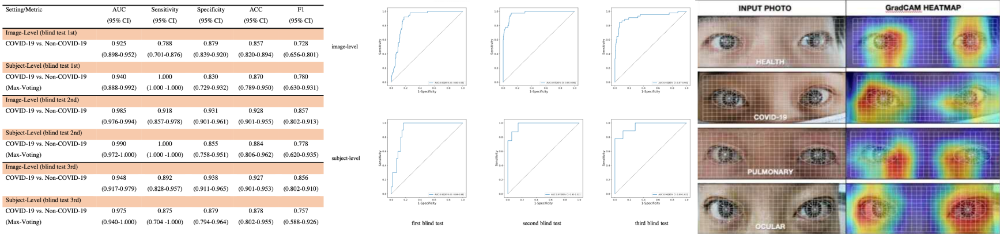
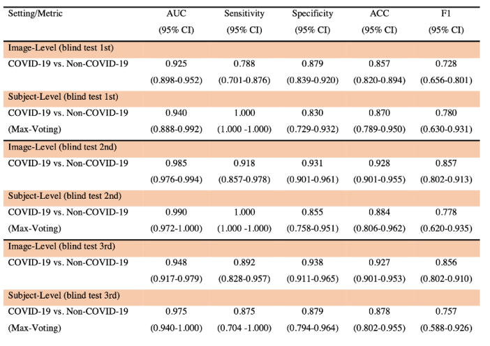
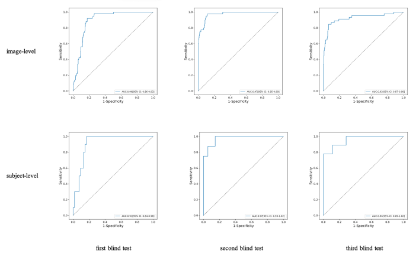
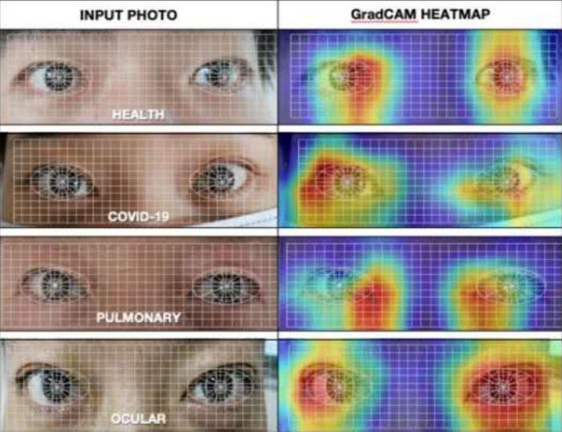

AIETECH
COVID-19 EYE TEST
-
85%
AVERAGE ON CROSS-RACE PATIENTS
SENSITIVITY / SPECIFICITY
-
75%
AVERAGE ON CROSS-RACE PATIENTS
ASYMPTOMATIC DETECTION RATE
-
97%
AVERAGE ON ASIAN PATIENTS
SENSITIVITY / SPECIFICITY
ON AUTHORISED RT-PCR CONFIRMED SUBJECTS
VARIANCE =±10% IN TERMS OF TESTING EXAMPLES




Classification performance of the classification network
on the dataset of China
Since February 2020, we have launched a globally COVID-19 eye test
program with registered clinical trials, and propose a new fast
screening method of analyzing the eye-region images, captured by
common CCD and CMOS cameras. This could reliably make a rapid risk
screening of COVID-19 with the sustainable stable high performance in
different countries and races. Meantime, we have built a globally
COVID-19 eye test links platform which implements
our algorithms and helps fast screening COVID-19. Furthermore, this
platform could gradually open more than 300 diseases eye tests and
joint study programs' invitation, such as virus influenza, diabetes,
hepatopathy, etc. We believe that the eye test study by AIETECH can
be inspiring and helpful for encouraging more researches in this
direction, and provide effective and rapid assist for clinical risk
screening, especially during the daily country wide screening,
outbreak monitoring, test pooling candidate selection.
 EN
EN